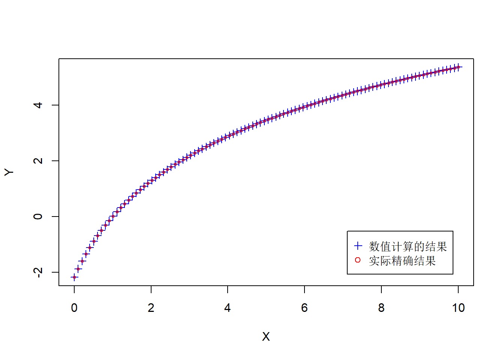
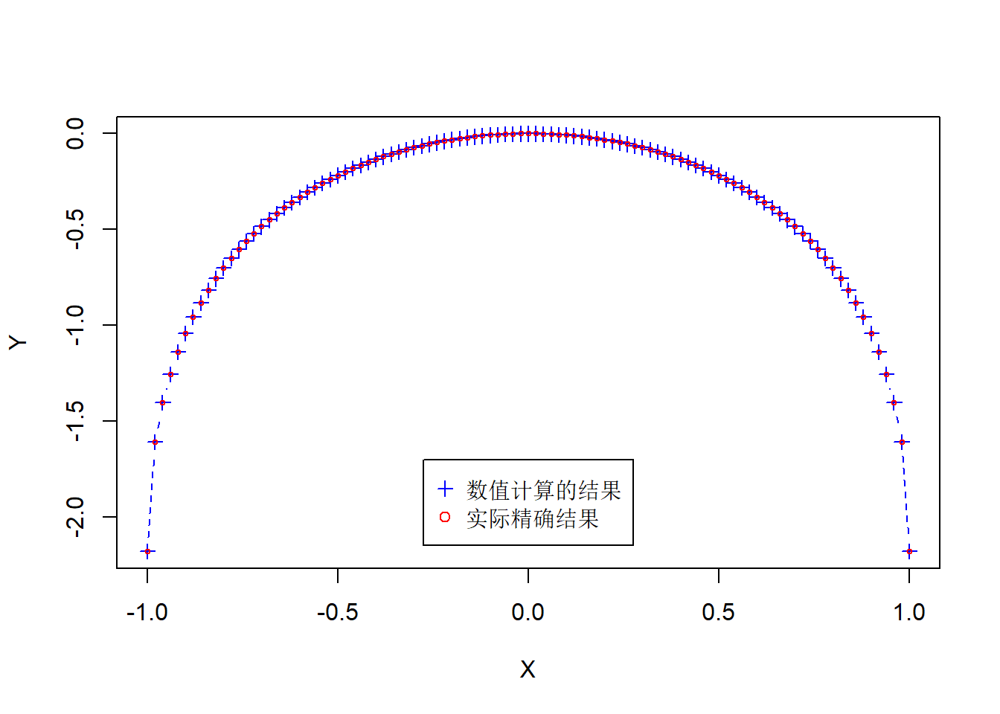

## 全局都要用到的函数
Global_Int_fun <- function(a,b,par,func,integrator = NULL){
if(is.null(integrator)){ #默认使用自带的积分求解器
## 返回一个向量
ans = purrr::map_dbl(par,\(par){integrate(\(x){func(x,par)},lower = a,upper = b)$value})
}else{
## 使用自己编写的积分求解器
ans = purrr::map_dbl(par,\(par){integrator(par,lower = a,upper = b)})
}
return(ans)
}含参量积分
含参量正常积分1
函数 \[ I(x) = \int_0^{\frac{\pi}{2}}ln(sin^2(\theta)+x^2cos^2(\theta))dx,0<x<+\infty \]
由于这里定积分计算中被积函数可能无界,但是可积(瑕积分).因此使用正常的数值积分可能和实际误差较大.
func1 <- function(x,par){
logb(sin(x)^2 + par^2 * cos(x)^2)
}
X = seq(0,10,len = 100)
Y = Global_Int_fun(0,pi/2,X,func = func1)
Y_real = pi*logb((1+X)/2)
plot(X,Y,cex = 1,pch = 3,type="b",lty = 2,col = "blue")
points(X,Y_real,col = "red",cex = 0.5)
legend("bottomright",col = c("blue","red"),pch = c(3,1),
legend = c("数值计算的结果","实际精确结果"),inset = 0.05)
含参量正常积分2[函数分段]
函数为: \[ F(\theta) = \int_0^{\pi}ln(1+\theta cos(x))dx,-1<x<1. \] 此函数的定义域非常重要.并且函数在端点处连续.
## 使用C++编写自适应积分算法
#Rcpp::sourceCpp("Integrate_cpp.cpp")
func2 <- function(x,par){
logb(1+par*cos(x))
}
X = seq(-1,1,len = 101) #这里的len要为奇数,保证最后取到0
Y = Global_Int_fun(0,pi,X,func = func2)
Y_real = pi * logb((1+sqrt(1-X^2))/2)
plot(X,Y,cex = 1,pch = 3,type="b",lty = 2,col = "blue")
points(X,Y_real,col = "red",cex = 0.5)
legend("bottom",col = c("blue","red"),pch = c(3,1),
legend = c("数值计算的结果","实际精确结果"),inset = 0.05)
如果我们想计算瑕积分\(\int_0^{\pi}ln(1+cos(x))dx\),可以计算上面的\(F(\theta)\)在自变量在1的极限值.(但是没有理论保证这两者可以相等,可以类比Abel定理吗?)